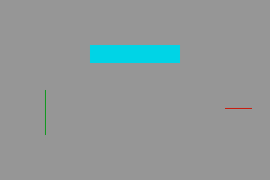
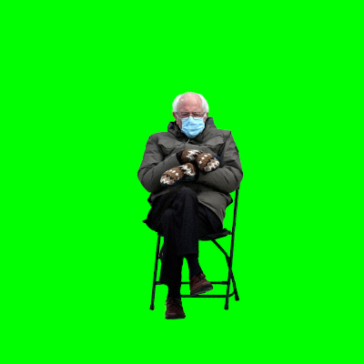
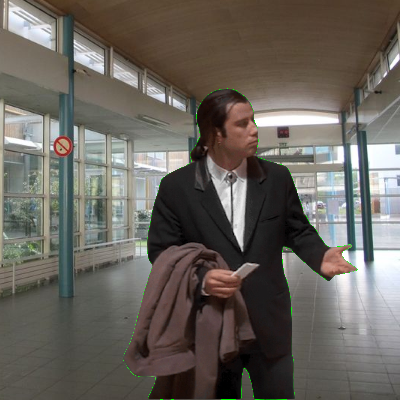

Création d'une image numérique en Python⚓︎
0. L'environnement logiciel nécessaire⚓︎
0.1 Option 1 : installer Thonny sur son ordinateur⚓︎
-
Rendez vous sur la page https://thonny.org/

-
Téléchargez et installez la version qui correspond à votre système d'exploitation (Windows, Mac, Linux).
-
Ouvrez Thonny et allez dans Outils / Gérer les paquets.
- Dans la zone de recherche, tapez «pillow» puis cliquez sur «Recherchez sur PyPi».
- Installez le paquet «pillow» qui vous est proposé.
0.2 Option 2 : utiliser en ligne le site Basthon⚓︎
Rendez-vous sur la page https://console.basthon.fr/

Remarques :
- Pour travailler avec un fichier (par exemple une image) de votre ordinateur, cliquez sur le bouton  - Pour avoir un «retour graphique» (notamment pour voir une image affichée en fin de programme par l'instruction
- Pour avoir un «retour graphique» (notamment pour voir une image affichée en fin de programme par l'instruction img.show()), cliquez sur le bouton  .
.
1. Premier code⚓︎
1.1 Le code à recopier⚓︎
1 2 3 4 5 6 7 8 9 10 11 12 13 14 15 16 17 18 19 20 | |
mon_dessin.png est créé dans le même dossier que votre code python.
Votre image créée doit être celle-ci :

1.2 Aide à la compréhension du code⚓︎

2. Des fonctions pour de jolies images !⚓︎
Pour l'instant nos pixels sont tous de la même couleur, et c'est un peu décevant...
Nous allons repartir avec le code ci-dessous :
1 2 3 4 5 6 7 8 9 10 11 12 13 14 15 16 | |
L'image produite est : blanche.
2.1 Un peu (beaucoup) d'aléatoire⚓︎
Au début du code, rajoutez la ligne
1 | |
Cela nous donne le droit d'utiliser la fonction randint(), qui reçoit deux nombres entiers en paramètres, et qui renvoie un nombre pseudo-aléatoire entre ces deux nombres.
Voilà un simulateur de dé à 6 faces :
1 2 | |
Exercice 1 Dans le code précédent, remplacer la valeur de chaque composante RGB (actuellement à 255) par un nombre aléatoire entre 0 et 255.
À quoi ressemble l'image produite ? (on appelle cela du bruit blanc)
2.2 Les mathématiques au service de l'esthétique⚓︎
Nous souhaiterions que la teinte des pixels change en fonction des coordonnées (x,y) de celui-ci.
Pour cela, nous allons, par exemple, essayer le code suivant :
1 2 3 4 5 6 7 8 9 | |
Un opérateur important : %
Nous allons avoir recours à un opérateur mathématique très important en programmation, l'opérateur %, appelé «modulo» :
a % b renvoie le reste de la division euclidienne de a par b.
Exemple :
1 2 3 4 5 6 | |
Cet opérateur est très souvent utilisé pour éviter à une variable de dépasser une certaine borne.
Ainsi, si z est un nombre entier, z % 255 sera un nombre toujours compris dans l'intervalle [0;254]
Exercice 2 Reprenez le code précédent et utilisez le modulo intelligemment.
Exercice 3
Modifiez la fonction f (faites parler votre imagination) et observez les résultats obtenus.
Exercice 3
Modifiez la fonction f afin qu'elle renvoie la distance du point de coordonnées (x,y) avec le centre de l'image. (modulo 255 bien sûr).
Admirez votre création !
3. Modifier la couleur d'une image existante⚓︎
Nous allons jouer avec les pixels de l'image ci-dessous.

- Téléchargez l'image ci-dessus (par un clic-droit puis Enregistrez l'image).
- Ouvrez Thonny, et enregistrez votre fichier
code_fleur.pydans le même répertoire que l'imagefleur.jpgque vous venez de télécharger.
Copiez-collez ensuite ce code :
1 2 3 4 5 6 7 8 9 10 11 12 13 14 15 16 17 18 19 20 21 22 23 24 25 | |
Exécutez ce code (F5) et observez l'image créée. Elle est, pixel par pixel, identique à l'image originale.
Mais essayez maintenant de modifier le contenu des variables new_r, new_g, new_b... et observez le résultat !
4. Activité finale : changer l'arrière-plan d'une image⚓︎
Vous avez déjà vu des extraits vidéos où un acteur tourne devant un fond vert, fond vert qui sera ensuite remplacé par une autre incrusatation vidéo au montage final.
Nous sommes maintenant capables de faire (à peu près...) la même chose avec quelques lignes de Python.
4.1 Les images de travail⚓︎
Notre personnage sera l'acteur John Travolta, héros du mème confused Travolta.
update : vous pouvez aussi travailler avec Bernie Sanders, candidat (malheureux) à la primaire démocrate aux US en 2020.
Nous disposons donc des images john.bmp et bernie.bmp :
{kind=link}


et d'une image de même taille, hall.png, où vous reconnaîtrez le hall du lycée :

L'objectif est bien sûr d'intégrer John Travolta (ou Bernie Sanders) dans le hall du lycée.
4.2 Fusion des deux images⚓︎
Nous savons :
- parcourir tous les pixels d'une image (avec une double boucle)
- récupérer la valeur d'un pixel (avec getpixel() )
- modifier la valeur d'un pixel (avec putpixel() )
- faire des tests avec if...
Nous avons donc tous les outils nécessaires pour accueillir John Travolta ou Bernie Sanders dans le hall du lycée : à vos claviers !
Correction
1 2 3 4 5 6 7 8 9 10 11 12 13 | |

5. Énigme des vacances⚓︎
En vous inspirant de l'activité précédente, découvrez ce qui se cache derrière cette belle image bleue. (enfin, bleue, bleue... est-elle vraiment bleue partout ?)

Aide pour démarrer la résolution de cette énigme⚓︎
Si vous travaillez à la maison et que vous ne voulez pouvez pas installer Thonny, utilisez Basthon, tel qu'indiqué plus haut.
Méthode :
1. Faire afficher la valeur du pixel de coordonnées (0,0).
2. Parcourir tous les pixels de l'image : si le pixel de coordonnées (x,y) est différent du pixel de référence (0,0), alors le colorier en blanc.
Spoiler : le début du code